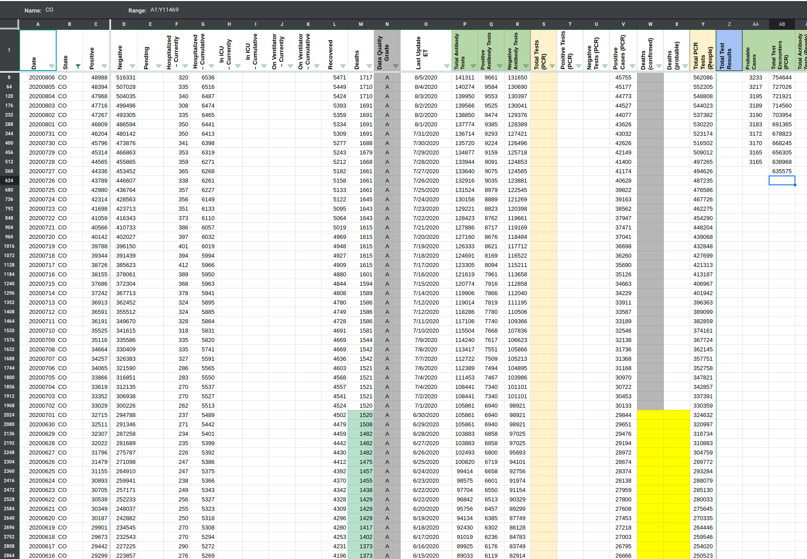
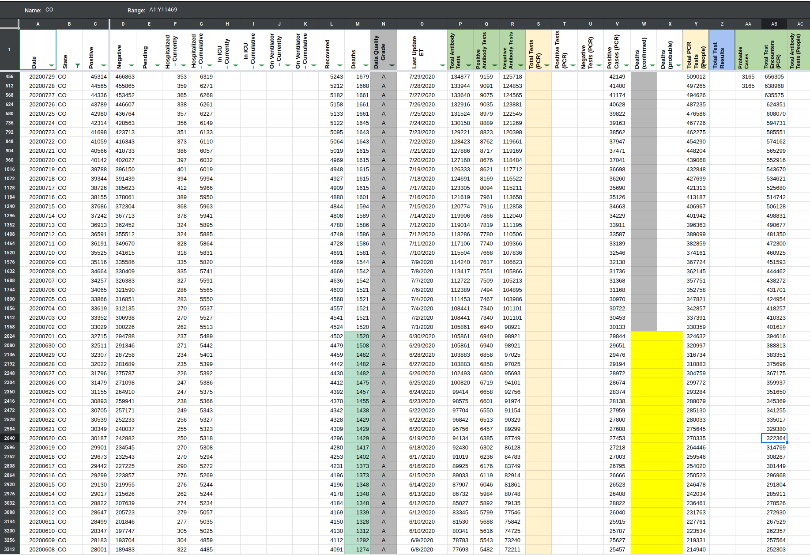
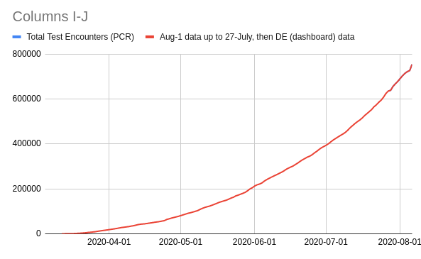

[CO] Backfill Test Encounters metric for CO
Issue number 716
space-buzzer opened this issue on July 31, 2020 at 2:14 pm
Labels Backfill Missing Data
CO publishes a “Test Encounters” value, and we recently added it to our worksheet, we need to backfill past data for this metric
We started collecting numbers on 7/27, when CO started publishing them on the dashboard.
To fill the values before 7/27, we used the “Testing Encounters” daily bar chart, to calculate cumulative sum by date. The values we used in this initial population of the time series were calculated from data as downloaded on 8/1.
We’re using this calculated backfill only for dates before the 27th, and going forward (despite the bar chart with daily test encounters being continuously back-filled) we’re only going to use the number posted on the dashboard. Since the numbers on the dashboard normally correspond to data as of two days previous, we are shifting the total test encounters to reflect what would have been displayed on the dashboard on the corresponding date.
Comments
Done Before:  After 
